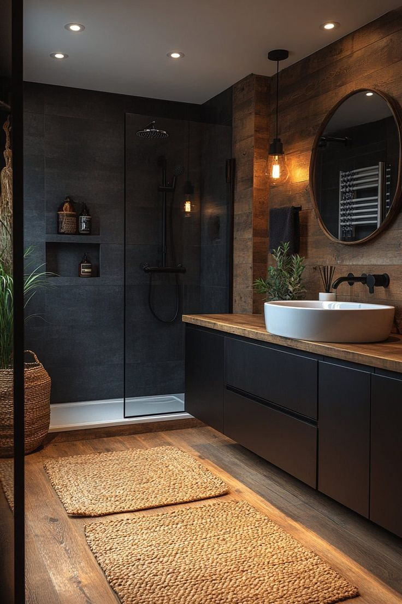
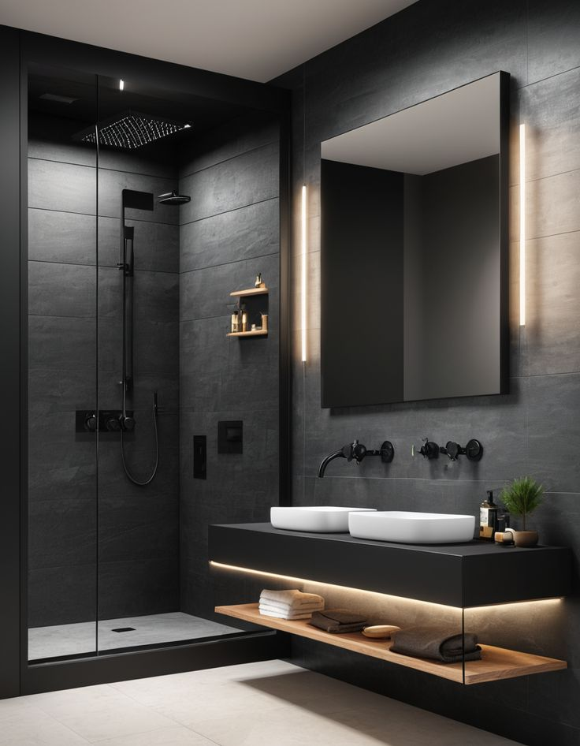

Пространство, свет и чистота форм — ключ к гармонии в интерьере.
В этом проекте мы оформили жилое пространство в стиле современного минимализма. Чистые линии, тёплые нейтральные оттенки и продуманные решения делают интерьер лёгким и гармоничным. Концепция вдохновлена стилем Japandi — утончённым сочетанием японской простоты и скандинавской сдержанности.
Мы подбираем стилистику, материалы, мебель и освещение, создаём 3D-визуализацию и сопровождаем реализацию.
Это стиль, где каждый элемент продуман и функционален. Нет лишнего — только суть, только гармония.
Обычно 3-5 недель в зависимости от сложности и площади объекта.
Да, мы контролируем ход работ, взаимодействуем с подрядчиками и следим за качеством исполнения.